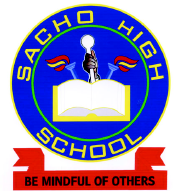

I was born in nairobi,Kenyatta Hospital,in the year 2006,January 3rd.Most of my life so far I've lived in the capital city but I spent a fraction of it upcountry.That really equips someone with a number of values and skills like humility,which in today's job market plays a key role.My education begins in private school found in lavington,Rudan Junior Academy I did my primary education entirely at Rudan and was blessed to be able to join Sacho High School  where I completed my secondary education.Currently I am taking a short course at one of the finest institutions as far as software development is concerned and since I have a passion for all things tech why not keep busy before joining university?I could use the skills! I am a very highly motivated and results-oriented individual.I have the proven ability to read and understand new content faster than most people.The only experience as much as software would be my technical subject (Computer Studies)in highschool.I am,however,looking to gain more skills and experience at Moringa School.My career goals would be to maximise my content in software development and become the best in my department.
Generally I enjoy doing alot but some of my main interests are:
Personally the Dragonfly defines me best because I feel blessed with the wisdom of the ages. The dragonfly was among the first winged insects, evolving over 300 million years to become one of the most beautiful airborne beings we see today. My dragonfly spirit animal reminds me that I am here to learn, evolve, and transform my life. Dragonfly meaning is all about personal growth and my soul's evolution. Dragonfly symbolism also represents those bright ideas that pop into my head, seemingly from out of nowhere. The dragonfly’s clear and iridescent wings show me the beauty of opportunities, enabling me to see things from different perspectives, which will bring more clarity to my life.